Proyecciones de Pelvis y Columna Vertebral
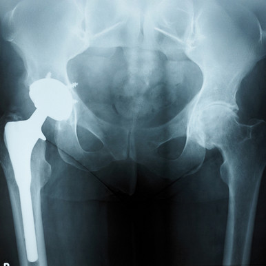
Pelvis AP
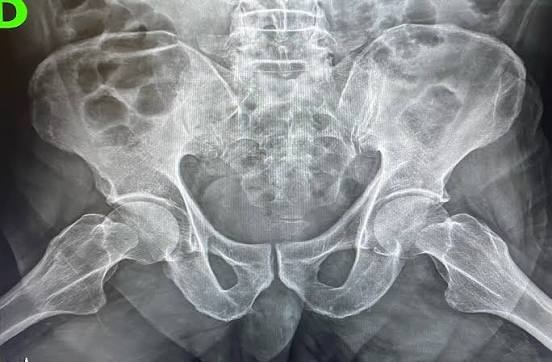
Pelvis - Lowenstein
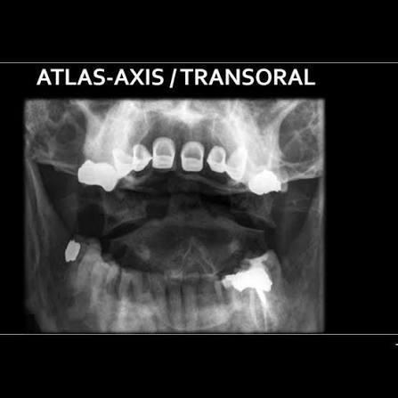
Columna Cervical - Atlas-Axis C1-C2 (Transoral)
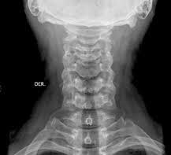
Columna Cervical AP
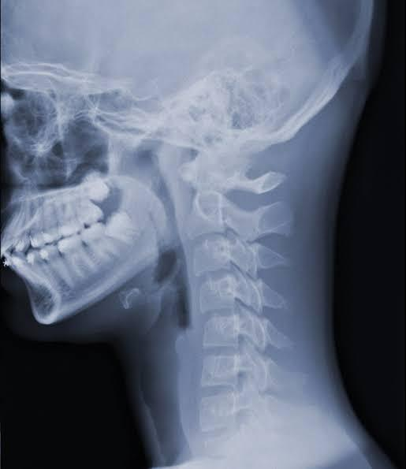
Columna Cervical Lateral
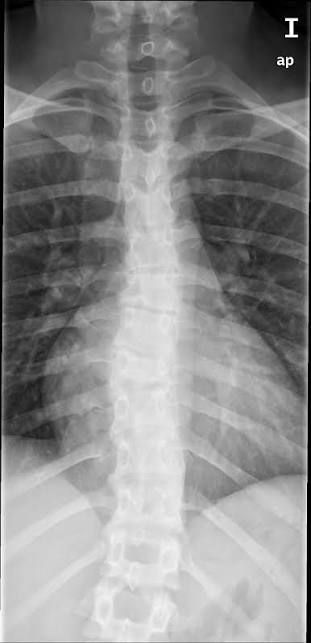
Columna Dorsal AP
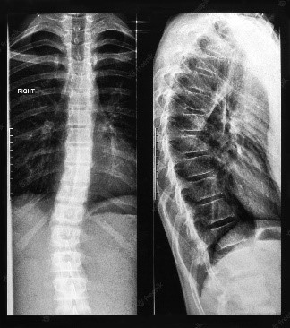
Columna Dorsal Lateral
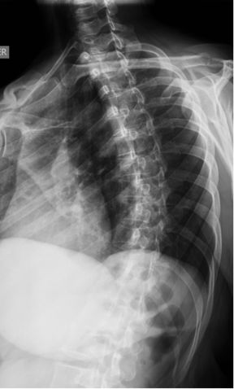
Columna Dorsal Oblicua (OAD / OAI)
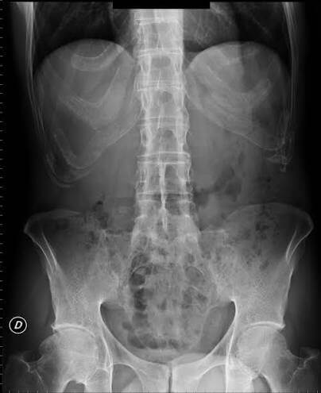
Columna Lumbar AP
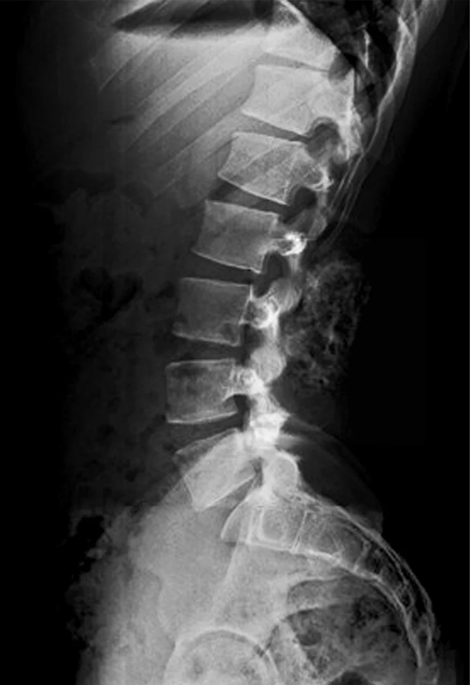
Columna Lumbar Lateral
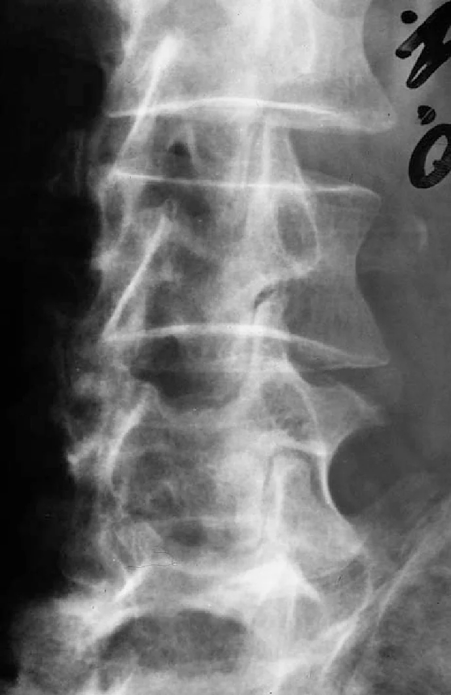
Columna Lumbar Oblicua (OAD / OAI)
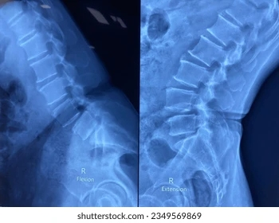
Columna Lumbar Dinámicas (Flexión / Extensión)
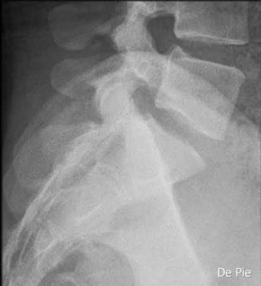
5° Espacio L5-S1 (AP y Lateral)
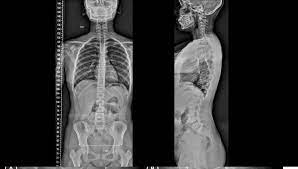
Columna Total (Espinograma AP y Lateral)
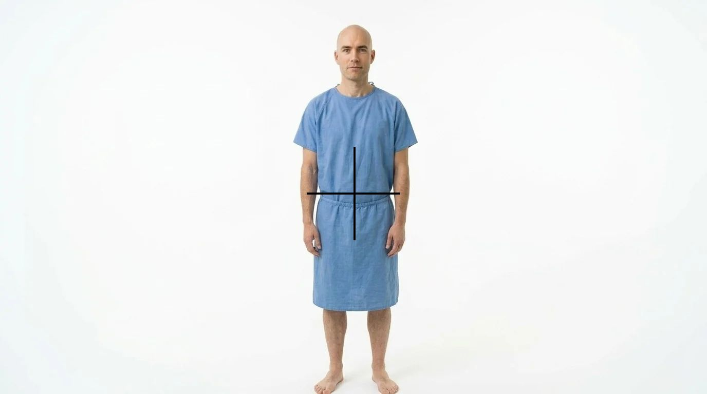
Posicionamiento PacientePelvis AP
Cinturones, botones metálicos, cierres, llaves, monedas, piercings pélvicos/umbilicales.
Pantalón y prendas con metal (usar bata de examen).
35 x 43 cm (Transversal). Folio regular.
100 cm (1 metro).
Sí (Camilla).
0° (Perpendicular al RI).
Por el frente en el Plano Sagital Medio (PSM); por el lado dos traveses de dedo sobre la Sínfisis Púbica (SP).
Decúbito dorsal, pelvis simétrica en la mesa, piernas estiradas con una rotación a medial de 15° (para desproyectar cuellos femorales), brazos a los lados del cuerpo.
75 - 85 kV
25 - 40 mAs
- Sin moverse.
- Protección Tiroidia.
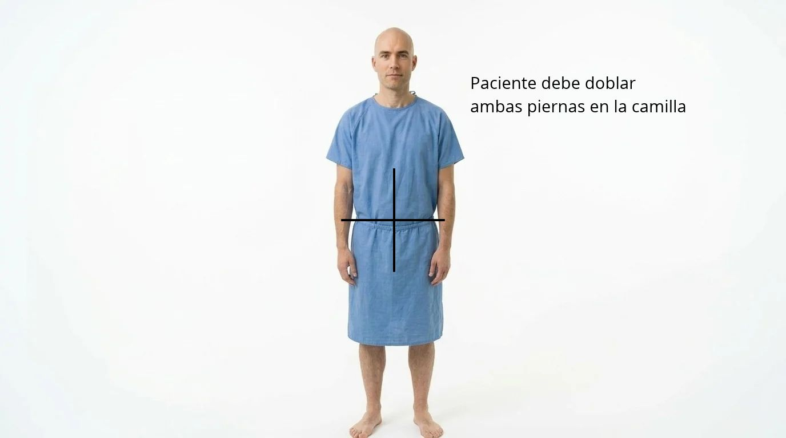
Posicionamiento PacientePelvis - Lowenstein
Cinturones, botones metálicos, cierres, llaves, monedas en región pélvica.
Pantalón y ropa con metal (usar bata de examen).
35 x 43 cm (Transversal). Folio regular.
100 cm (1 metro).
Sí (Camilla).
0° (Perpendicular al RI).
Por el frente en el PSM; por el lado dos traveses de dedo sobre la Sínfisis Púbica (SP), cuidando que el borde superior del chasis quede por encima de las crestas ilíacas.
Decúbito dorsal, brazos extendidos al lado del cuerpo. Piernas flectadas en un ángulo de 90°, plantas de los pies contrapuestas y separación de rodillas en abducción máxima (45°).
75 - 85 kV
25 - 40 mAs
- Sin moverse.
- Protección Tiroidia.
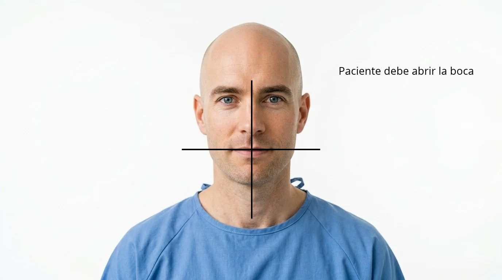
Posicionamiento PacienteAtlas - Axis C1-C2 (Transoral o Charnela)
Prótesis dentales removibles, piercings linguales/labiales, aros, collares, lentes.
Nada (despejar cuello).
18 x 24 cm (Longitudinal).
100 cm.
Sí (Rejilla Potter Bucky).
0° (Perpendicular al RI).
Longitudinal en PSM; Transversal ingresando directamente por el centro de la boca abierta (alineando borde inferior de incisivos superiores con base occipital / apófisis mastoides).
Decúbito supino, de pie o sentado, apoyando bóveda craneana sobre el RI. Elevar levemente el mentón y abrir la boca ampliamente sin mover la cabeza.
70 - 80 kV
16 - 25 mAs
- Mantener la boca bien abierta y apoyar la lengua en el piso de la boca (evita superposición sobre la apófisis odontoides).
- Apnea durante el disparo.
- Sin moverse.
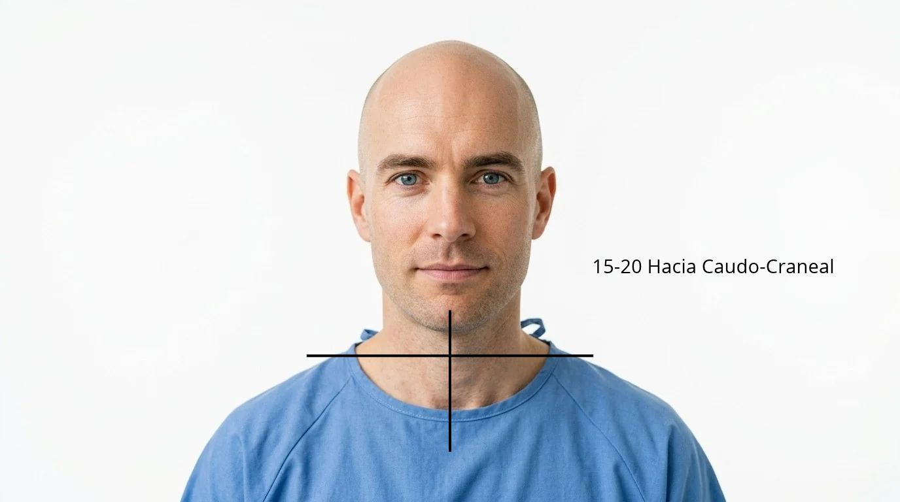
Posicionamiento PacienteColumna Cervical AP
Collares, cadenas, aros, piercings, horquillas metálicas.
Despejar cuello y parte superior de hombros.
18 x 24 cm (Longitudinal).
100 cm.
Sí (Rejilla Potter Bucky).
Angulado de 15° a 20° en dirección Caudo-Craneal (cefálico).
Longitudinal sobre Plano Medio Sagital (PSM). Transversal ingresando a nivel de C4 (borde inferior del cartílago tiroides).
Decúbito supino, de pie o sentado, apoyando bóveda craneana sobre la superficie del RI. Elevar el mentón de manera que la línea oclusal y la apófisis mastoides queden perpendiculares al RI (evalúa de C3 a D2).
65 - 75 kV
12 - 20 mAs
- Contener la respiración y NO TRAGAR durante el disparo.
- Sin moverse.
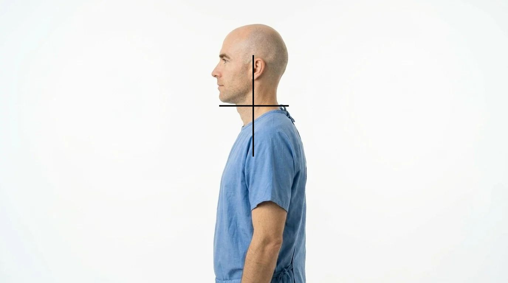
Posicionamiento PacienteColumna Cervical Lateral
Aros, collares, cadenas, horquillas metálicas.
Despejar cuello y hombros.
18 x 24 cm (Longitudinal).
150 a 180 cm (para compensar la distancia objeto-película de los hombros) / 100 cm según equipo.
Sí (Estativo mural).
0° Horizontal (Perpendicular al RI).
Horizontal a nivel de C4 (plano coronal medio del cuello).
De pie o sentado en lateral estricto con el hombro apoyado en el estativo. Elevar ligeramente el mentón para evitar superposición mandibular y descender al máximo ambos hombros para visualizar desde C1 hasta C7-T1.
70 - 80 kV
16 - 25 mAs
- Contener la respiración en apnea espiratoria (ayuda a descender los hombros).
- Sin moverse.
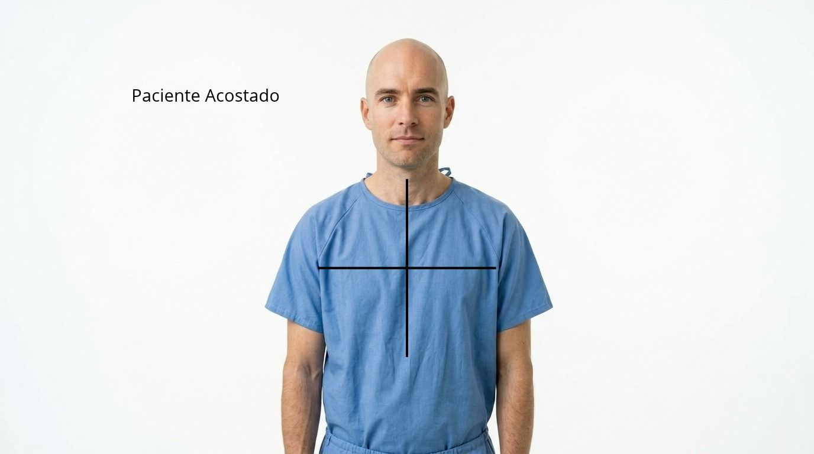
Posicionamiento PacienteColumna Dorsal AP
Cadenas, collares, sostén con barba o broches metálicos, cierres.
Desnudar tórax (usar bata de examen).
30 x 40 cm (Longitudinal). Folio regular.
100 cm.
Sí (Camilla).
0° (Perpendicular y al centro del chasis).
Por el frente en el PSM; por el lado en el punto medio entre el apéndice xifoides y el manubrio esternal (aprox. T6-T7).
Decúbito dorsal con el PSM perpendicular a la mesa, brazos al lado del cuerpo y piernas estiradas (o levemente flectadas para reducir cifosis).
75 - 85 kV
25 - 40 mAs
- En apnea espiratoria (homogeneiza la densidad pulmonar sobre la columna torácica).
- Sin moverse.
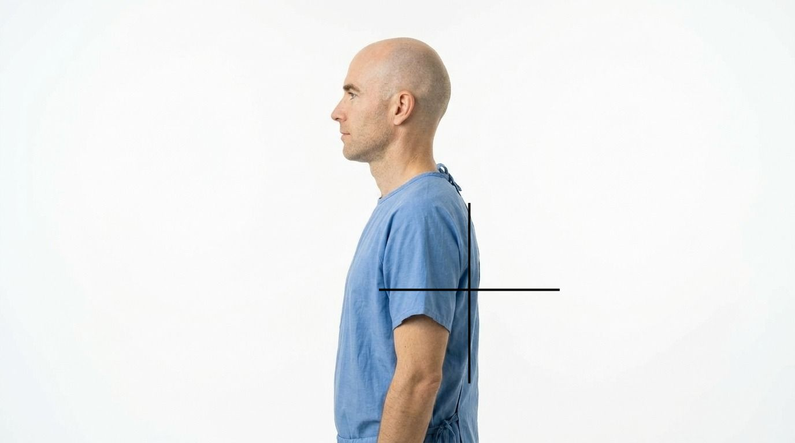
Posicionamiento PacienteColumna Dorsal Lateral
Elementos metálicos torácicos, cadenas, sostén.
Desnudar tórax (bata de examen).
30 x 40 cm (Longitudinal). Folio regular.
100 cm.
Sí (Camilla).
0° (Perpendicular y al centro del chasis).
Por el frente 4 traveses de dedo desde el centro de la estructura hacia posterior; por el lado a nivel del vértice escapular.
Decúbito lateral estricto, piernas semiflectadas con almohada entre las rodillas para evitar inclinación de caderas. Brazos elevados hacia adelante. La columna debe quedar paralela a la mesa (corregir con esponjas radiotransparentes bajo cintura si es necesario).
80 - 90 kV
40 - 60 mAs
- En apnea espiratoria (o respiración suave durante exposición prolongada para difuminar arcos costales).
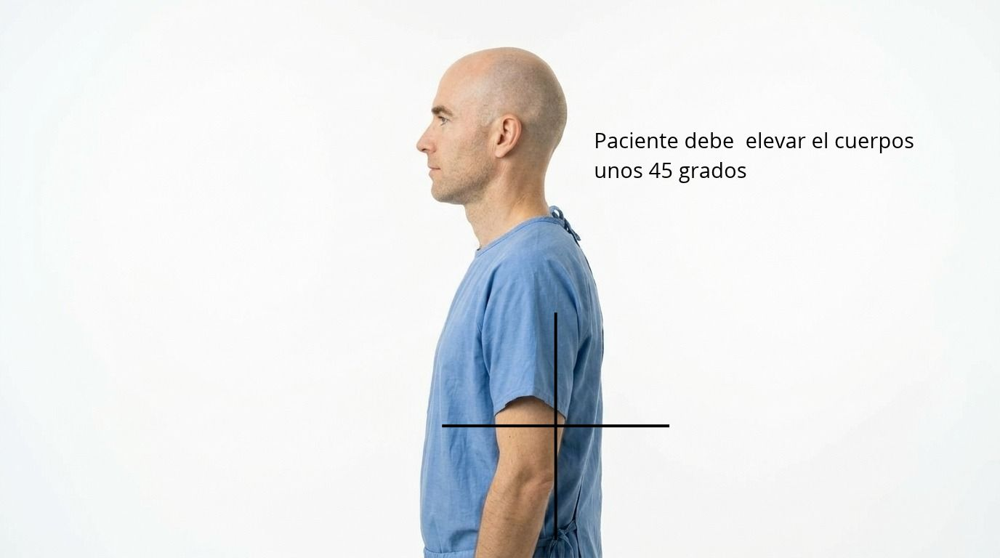
Posicionamiento PacienteColumna Dorsal Oblicua (OAD / OAI)
Objetos metálicos en tórax y abdomen alto.
Desnudar tórax (bata de examen).
30 x 40 cm (Longitudinal). Folio regular.
100 cm.
Sí (Camilla).
0° (Perpendicular y al centro del chasis).
Por el frente aproximadamente a 1 o 2 traveses de dedo hacia medial de la EIAS alejada de la mesa; por el lado el punto ubicado entre el apéndice xifoides y el manubrio esternal.
Desde decúbito dorsal, elevar el cuerpo unos 45° con respecto a la mesa apoyando el lado de interés (con cuña de espuma de 70°/20°). Flectar la pierna contraria formando un "4" y acomodar brazos para dar equilibrio y sostén.
75 - 85 kV
30 - 50 mAs
- En apnea espiratoria durante el disparo.
- Sin moverse.
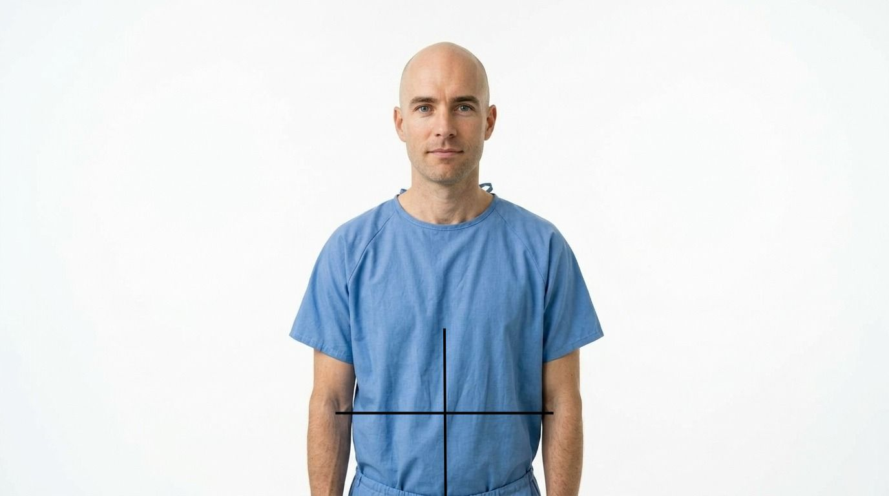
Posicionamiento PacienteColumna Lumbar AP
Cinturones, botones metálicos, cierres, piercings umbilicales.
Pantalón y prendas con metal (usar bata de examen).
24 x 30 cm (Longitudinal) o 35 x 43 cm si se incluye sacro. Folio regular.
100 cm.
Sí (Camilla).
0° (Perpendicular y al centro del chasis).
Por el frente en el PSM; por el lado el punto medio entre el apéndice xifoides y la línea que une ambas EIAS (crestas ilíacas / L3-L4).
Decúbito dorsal con el PSM perpendicular a la mesa, brazos al lado del cuerpo. Flectar rodillas y caderas apoyando plantas de los pies en la camilla para rectificar la lordosis lumbar y abrir espacios intervertebrales.
75 - 85 kV
30 - 50 mAs
- Apnea espiratoria durante el disparo.
- Sin moverse.
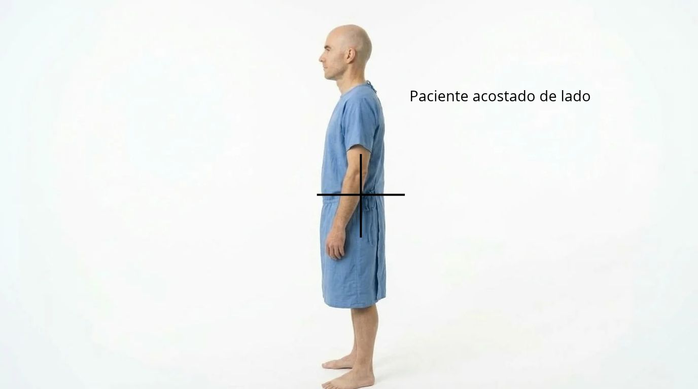
Posicionamiento PacienteColumna Lumbar Lateral
Botones metálicos, cierres, cinturones.
Bata de examen.
24 x 30 cm (Longitudinal) o 35 x 43 cm. Folio regular.
100 cm.
Sí (Camilla).
0° (Perpendicular y al centro del chasis).
Por el frente 4 traveses de dedo del borde posterior de la piel hacia anterior; por el lado 2 traveses de dedo sobre la cresta ilíaca.
Decúbito lateral estricto, piernas semiflectadas con almohada entre rodillas. Colocar soporte/esponja radiolúcida bajo la cintura para mantener el eje longitudinal de la columna paralelo a la mesa.
85 - 95 kV
50 - 80 mAs
- Apnea espiratoria durante el disparo.
- Sin moverse.
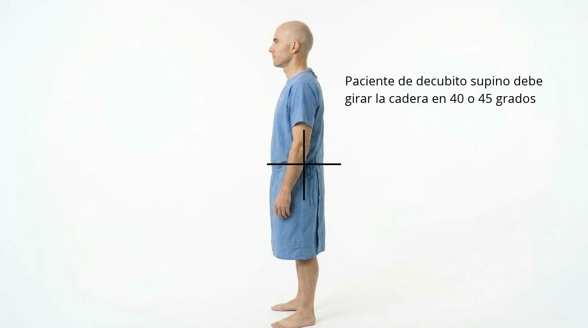
Posicionamiento PacienteColumna Lumbar Oblicua (OAD / OAI)
Botones metálicos, cierres, piercings abdominales.
Bata de examen.
24 x 30 cm (Longitudinal). Folio regular.
100 cm.
Sí (Camilla).
0° (Perpendicular y al centro del chasis).
Por el frente aproximadamente a 1 o 2 traveses de dedo hacia medial de la EIAS alejada de la mesa; por el lado el punto ubicado entre el apéndice xifoides y la línea que une ambas EIAS.
Rotación oblicua de 45° apoyando el lado de interés para evaluar articulaciones cigoapofisiarias y el istmo (pars interarticularis). Anatomía del "Perrito de Lachapelle": Nariz (apófisis transversa), Ojo (pedículo), Oreja (apófisis articular sup.), Cuello (pars interarticularis/istmo), Pata delantera (apófisis articular inf.).
80 - 90 kV
40 - 60 mAs
- Apnea espiratoria durante el disparo.
- Sin moverse.
Columna Lumbar Dinámicas (Flexión y Extensión)
Botones metálicos, cierres, cinturones.
Bata de examen.
24 x 30 cm (Longitudinal) por cada proyección. Folio regular.
100 cm.
Sí (Estativo mural en bipedestación).
0° (Perpendicular y al centro del chasis).
Por el frente 4 traveses de dedo del borde posterior de la piel hacia anterior; por el lado 2 traveses de dedo sobre la cresta ilíaca.
En bipedestación y en lateral estricto, brazos cruzados tomándose los codos y elevados a 90°. Realizar dos tomas separadas: una en hiperflexión anterior máxima y otra en hiperextensión posterior máxima del segmento lumbar (sin rotar la pelvis).
85 - 95 kV
50 - 80 mAs
- En apnea espiratoria. Evalúa inestabilidad vertebral (anterolistesis / retrolistesis).
- Sin moverse.
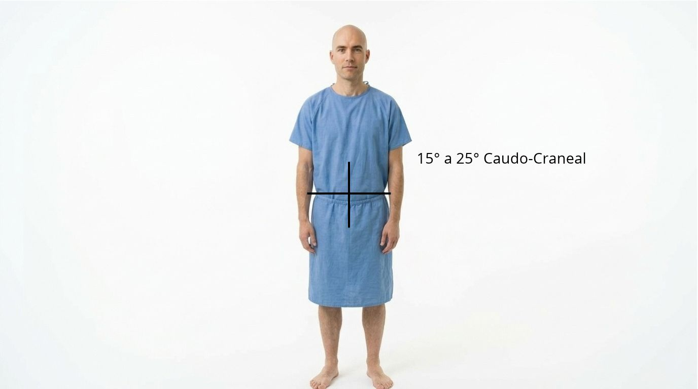
Posicionamiento PacienteProyección Localizada 5° Espacio L5-S1 (AP y Lateral)
Botones metálicos, cierres, joyas pélvicas.
Bata de examen.
18 x 24 cm (Longitudinal). Folio regular.
100 cm.
Sí (Camilla).
5° Espacio AP angulado en 15° a 25° Caudo-Craneal. 5° Espacio Lateral angulado en 5° a 8° Cráneo-Caudal (si el espacio está abierto en lateral previa) o 5° Caudo-Craneal / 0° según inclinación del sacro.
AP por el frente PSM y por el lado a nivel de las EIAS. Lateral por el frente 4 traveses de dedo hacia anterior desde borde posterior de la piel y por el lado dos traveses de dedo bajo la cresta ilíaca.
AP en decúbito dorsal con PSM alineado. Lateral en decúbito lateral estricto con piernas semiflectadas, almohada entre rodillas y apoyo radiolúcido en cintura.
80 - 85 kV (AP) / 90 - 95 kV (Lateral)
35 - 50 mAs (AP) / 60 - 90 mAs (Lateral)
- Apnea espiratoria durante el disparo.
- Sin moverse.
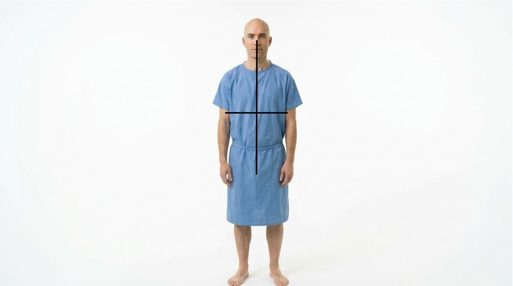
Posicionamiento PacienteColumna Total AP y Lateral (Espinograma)
Todos los elementos metálicos desde el cuello hasta la pelvis (cadenas, sostén, botones, cierres, cinturones).
Bata de examen abierta hacia atrás.
30 x 90 cm (Longitudinal) o detector largo digital (Stitching). Folio 3 velocidades (en sistema convencional).
180 cm (1.80 metros).
Sí (Estativo mural vertical de cuerpo entero).
0° Horizontal (Perpendicular al RI).
Por el frente en el PSM; por el lado a nivel del apéndice xifoides (punto medio del receptor largo).
Paciente en bipedestación, descalzo, piernas juntas y estiradas. En AP: brazos extendidos al lado del cuerpo. En Lateral: brazos elevados hacia adelante apoyados en soporte para despejar columna dorsal y lumbar.
80 - 90 kV (AP) / 90 - 100 kV (Lateral)
40 - 60 mAs (AP) / 60 - 90 mAs (Lateral)
- Apnea espiratoria durante el disparo.
- Sin moverse.